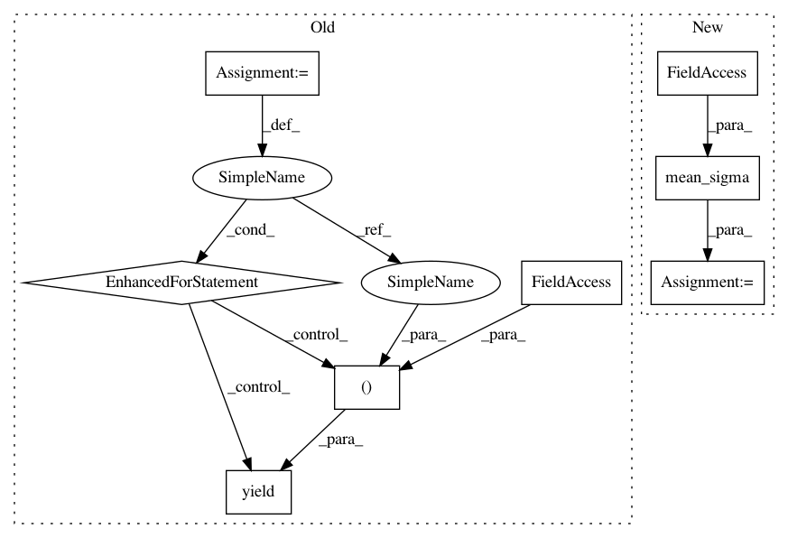

d1f932a01a3a2d73167dea9be55ffae747d1b66b,astroML/stats/tests/test_stats.py,,test_mean_sigma,#,24
Before Change
for shape in [(4, ), (4, 5), (4, 5, 6)]:
a = np.random.random(shape)
for axis in (None, 0):
for ddof in (0, 1):
yield (check_mean_sigma, a, axis, ddof)
//---------------------------------------------------------------------------
// Check that the keepdims argument works as expected
// we"ll later compare median_sigmaG to these results, so that
// is effectively tested as well.
def check_mean_sigma_keepdims(a, axis):
mu1, sigma1 = mean_sigma(a, axis, keepdims=False)
mu2, sigma2 = mean_sigma(a, axis, keepdims=True)
After Change
np.random.seed(0)
a = np.random.random(a_shape)
mu1, sigma1 = mean_sigma(a, axis=axis,
ddof=ddof)
mu2 = np.mean(a, axis=axis)
sigma2 = np.std(a, axis=axis, ddof=ddof)
In pattern: SUPERPATTERN
Frequency: 3
Non-data size: 8
Instances
Project Name: astroML/astroML
Commit Name: d1f932a01a3a2d73167dea9be55ffae747d1b66b
Time: 2018-11-30
Author: bsipocz@gmail.com
File Name: astroML/stats/tests/test_stats.py
Class Name:
Method Name: test_mean_sigma
Project Name: astroML/astroML
Commit Name: d1f932a01a3a2d73167dea9be55ffae747d1b66b
Time: 2018-11-30
Author: bsipocz@gmail.com
File Name: astroML/stats/tests/test_stats.py
Class Name:
Method Name: test_mean_sigma_keepdims
Project Name: astroML/astroML
Commit Name: d1f932a01a3a2d73167dea9be55ffae747d1b66b
Time: 2018-11-30
Author: bsipocz@gmail.com
File Name: astroML/stats/tests/test_stats.py
Class Name:
Method Name: test_median_sigmaG_approx
Project Name: astroML/astroML
Commit Name: d1f932a01a3a2d73167dea9be55ffae747d1b66b
Time: 2018-11-30
Author: bsipocz@gmail.com
File Name: astroML/stats/tests/test_stats.py
Class Name:
Method Name: test_mean_sigma